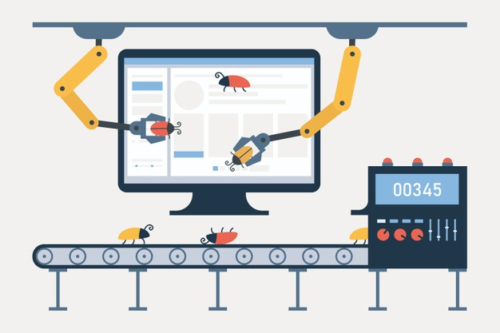

What is Automation Testing?
Automation Testing or Test Automation is a software testing technique that performs using special automated testing software tools to execute a test case suite. On the contrary, Manual Testing is performed by a human sitting in front of a computer carefully executing the test steps. The automation testing software can also enter test data into the System Under Test, compare expected and actual results and generate detailed test reports. Test Automation demands considerable investments of money and resources.